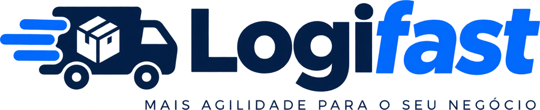
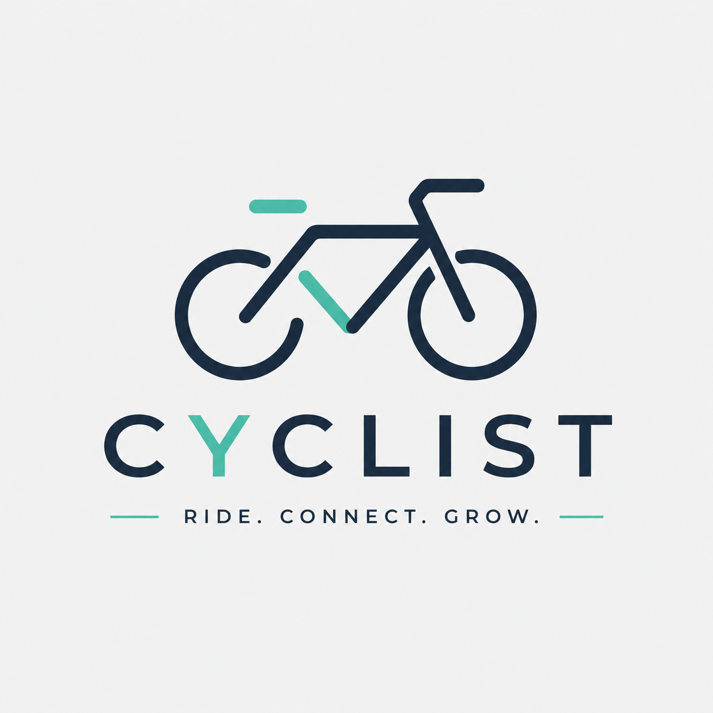

Analista de Dados com bagagem em Logística e PCP, unindo visão operacional e inteligência de negócios.
Profissional com sólida experiência em Logística, Planejamento de Materiais e Gestão de Estoques, com uma visão analítica voltada para a melhoria contínua e tomada de decisão baseada em dados.
Atualmente graduando em Análise e Desenvolvimento de Sistemas, aprofundo conhecimentos em Python, SQL, Power BI e automação de processos para unir a vivência operacional a soluções eficientes de dados.
Ferramentas técnicas aplicadas a quem conhece a operação por dentro.
Soluções analíticas focadas em resolver problemas reais de negócio.

53,6 mil
pedidos analisados
12,9%
taxa de atraso
18
perguntas de negócio
Objetivo: Diagnosticar gargalos em mais de 53 mil pedidos, avaliando taxas de atraso, severidade e os pontos críticos da operação.
Principais entregas: Modelagem em Star Schema (MySQL), ETL com Views otimizadas, dashboard em Power BI e recomendações priorizadas para a gestão.

2
perfis comparados
ETL
em Python
1
dashboard interativo
Objetivo: Identificar padrões de comportamento de viagens para direcionar a estratégia de conversão de usuários casuais em membros anuais.
Principais entregas: Tratamento de dados em Python, modelagem e dashboard dinâmico para análise de duração de viagens e sazonalidade.
Análise de planejamento e controle da produção com foco em capacidade e cumprimento do plano.
Automação de tarefas repetitivas da rotina operacional com Python.
Estou aberto a oportunidades na área de Análise de Dados, Business Intelligence e Logística Analítica.